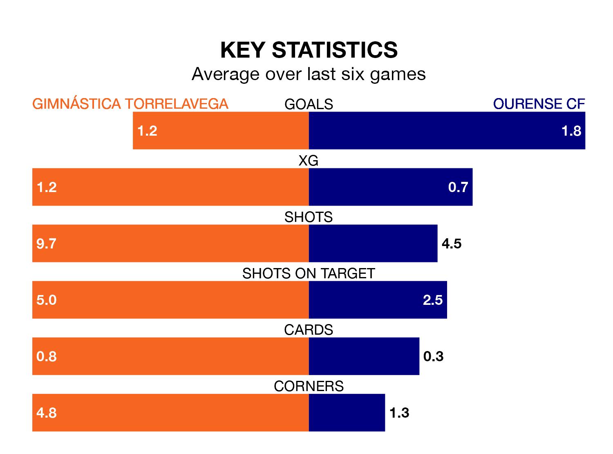

Ourense CF face Gimnástica Torrelavega on Sunday seeking to protect their formidable unbeaten run in the Segunda División RFEF Group 1.
Ourense are unbeaten in 11, with six wins and five draws, ahead of the 4pm kick-off.
They face a Gimnástica Torrelavega team who have won three and drawn four over the same number of games.
Ourense are top of the table after 25 games, of which they have won 15 and drawn eight, earning 53 points.
Gimnástica Torrelavega are 12 places behind the away team in 13th, with seven wins and seven draws putting them on 28 points.
With 35 goals in 25 games so far this season, Ourense are the league's third-highest scorers with 1.4 goals per game. And they are conceding fewer than average, letting in 13 goals at a rate of 0.5 per game.
The hosts are also above average scorers, with 1.2 goals per game, compared to a league average of 1.1. They have conceded 1.4 goals per game.
In the last five years, Gimnástica Torrelavega and Ourense have played each other on four occasions. Gimnástica Torrelavega won three of them and Ourense one.
On average, Gimnástica Torrelavega scored 1.5 goals and Ourense 1.0 in those matches.
Their last meeting was on October 28, when Ourense won 2-1 at home.
Gimnástica Torrelavega's last match was on March 3, a 1-1 draw against SD Compostela, with Javier Delgado Quintana getting the goal for Gimnástica Torrelavega.
Ourense beat Villalbés 2-0 last time out, on March 2, with Hugo Sanz Pérez on the scoresheet.
Updated: 09:34 (UTC), 08/03/24